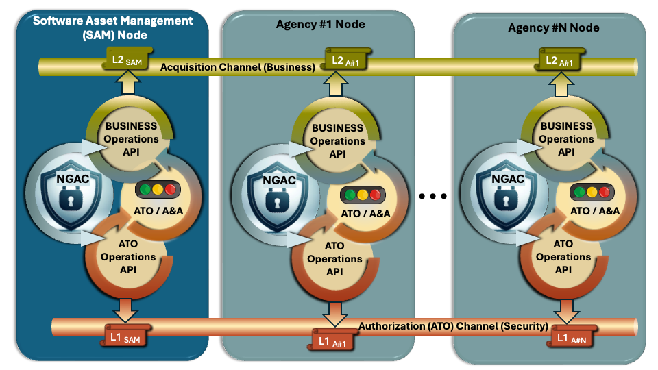

BloSS@M:
Blockchain-based Secure Software Assets Management
WHAT IS BLOSS@M?

The BloSS@M (Blockchain-based Secure Software Assets Management) service enables centralized acquisition of software assets at the U.S. Government level and their distribution to agencies only for the duration of use. This approach allows assets to be shared, recycled, and efficiently reused across departments. Aligned with the President's Management Agenda (PMA), blockchain-based systems can meet Federal Information Security Management Act (FISMA) requirements through automated processes.
The project delivers a fully decentralized, intrusion-tolerant software asset management system that leverages permission-based blockchains, SWID tags, and NGAC. The permission-based blockchain component provides unique benefits including high throughput, scalability, and modular design.
GOALS
Proof of Concept
Demonstrate a proof-of-concept application for managing software assets using blockchain technology. BloSS@M establishes a working model that validates core tehcnical assumptions.
Distributed Ledger
Validate permission-based distributed ledger systems for U.S. Government use. Confirm that a permissioned ledger architecture can meet the integrity, auditability, and access control requirements without relying on a single point of authority.
Strategic Alignment
Support the President's Management Agenda (PMA) QSMO initiatives. Advances the consolidation of common administrative services by providing a shared, government-wide platform for software asset management that improves efficiency, reduces redundancy, and increases accountability across agencies.
Secure Sharing
Enable transparent and secure sharing of software assets across agencies. BloSS@M establishes a trust framework that allows participating organizations to exchange asset data and usage rights with confidence.
Asset Leasing
Provide a centralized service and upwards aggregation for agencies to lease software as needed. Software entitlements are allocated on demand, reducing overhead and ensuring resources reach the missions that need them most.
Resource Optimization
Allow assets to be returned to a shared pool of reuse and efficient management. Prevents license sprawl and eliminates the cost of dormant entitlements, ensuring that software are fully utilized across the federal enterprise.
Assessment and Authorization
Leverages the Open Security Controls Assessment Language (OSCAL) to ease ATO and support continuous monitoring. By ingesting machine-readable security control data directly from OSCAL artifacts, BloSS@M reduces the manual effort associated with authorization packages.
Decentralized Implementation
Intrusion-tolerant software assets management system leveraging multiple techniques (e.g., permission-based blockchains, SWID tag, NGAC).